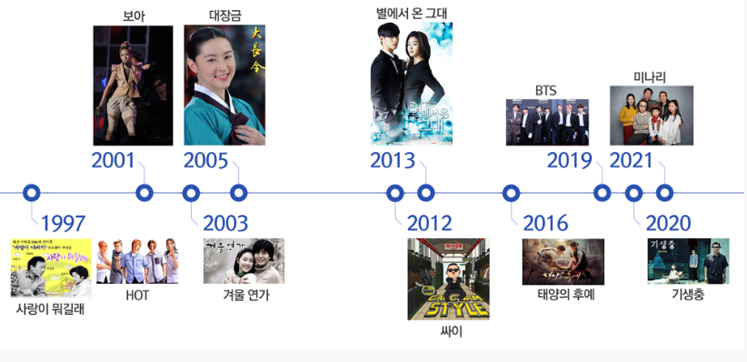

‘한류’가 세상에 알려 진지도 어언 20년이 지났다. <사랑이 뭐길래>, <별은 내 가슴에>가 아시아의 수백만 명의 시청자를 끌어모으고, '클론’과 HOT가 이 지역 청소년들의 패션 스타일을 바꾸어 놓으면서 한류가 시작되었다. 하지만 초기에 한류를 바라보는 시선은 대부분 비관적이었다. 이런 비판가들은 한국 콘텐츠의 해외 진출이 살기 위한 필사적인 몸부림이었다는 점을 과소평가했다. 유명 기획사 대표는 “우리의 세계 진출은 한국에서 더 이상 버틸 수 없었기 때문에 이루어진 것이다. 우리는 먹고살기 위해 해외로 나갈 수밖에 없었다”라고 세계 진출의 동기를 설명하였다. 누군가가 도와주어서, 아니면 여건이 좋아서 해외에 진출한 것이 아니라, 당시 열악했던 국내 상황 속에서 문화콘텐츠산업의 생존을 위해 해외 진출을 모색했던 결과가 지금의 한류열풍이라고 할 수 있다.
Korean Wave
메인메뉴
한류 역사

한류의 성과
한류의 일차적 성과는 문화콘텐츠 상품의 해외 수출액이다. 2000년 약 5억7천만 달러에 불과했던 콘텐츠 수출액은 2018년에는 96억1천5백4만 달러로 급증하였다. 특히, 핵심 한류 콘텐츠로 분류되는 방송콘텐츠와 대중음악의 수출액은 더욱 두드러진다. 2000년 1천3백만 달러에 불과했던 방송수출액은 2018년 5억 달러로 40배에 가까운 성장을 보였으며, 2000년 약 8백만 달러에 불과한 음악콘텐츠는 2018년에 방송콘텐츠 수출액을 능가하였다.
한류는 한국의 이미지에 문화를 입혀 새로운 국가 브랜드를 만들어 내었다. 한국전쟁, 경제발전 등에 한정되어 있던 한국의 이미지가 바뀌게 된 것이다. 한류 스타들이 세계 패션의 트렌드 세터가 되면서 한국의 문화가 ‘힙’한 문화로 부상하고 있다. 한류 팬들은 한국어를 익히고, 한국 역사를 공부하고, 한국에 관광을 온다. 전 세계에 한국을 알고 이해하는 젊은이들이 증가함으로써, 앞으로 이들이 국제사회에서 한국의 큰 자산이 될 것이다. 또 이렇게 형성된 한국의 이미지는 프리미엄을 더하면서, 한국 대중문화의 파급효과를 확대시킬 것이다. 과거 한국 상품이라고 하면 디스카운트되었던 관행이 바뀌고 있다.
전화 : 010-35**-****